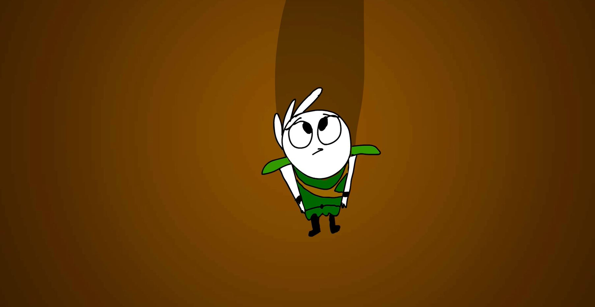
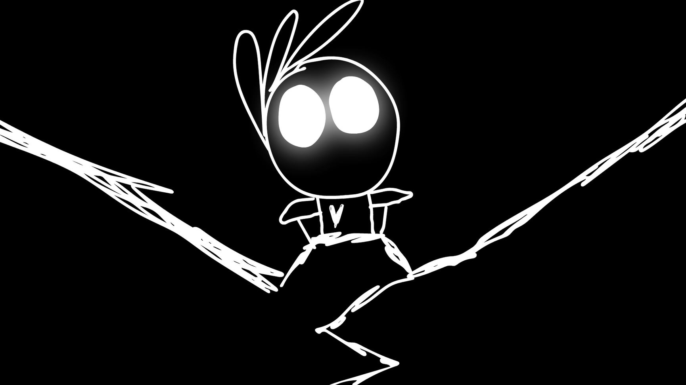
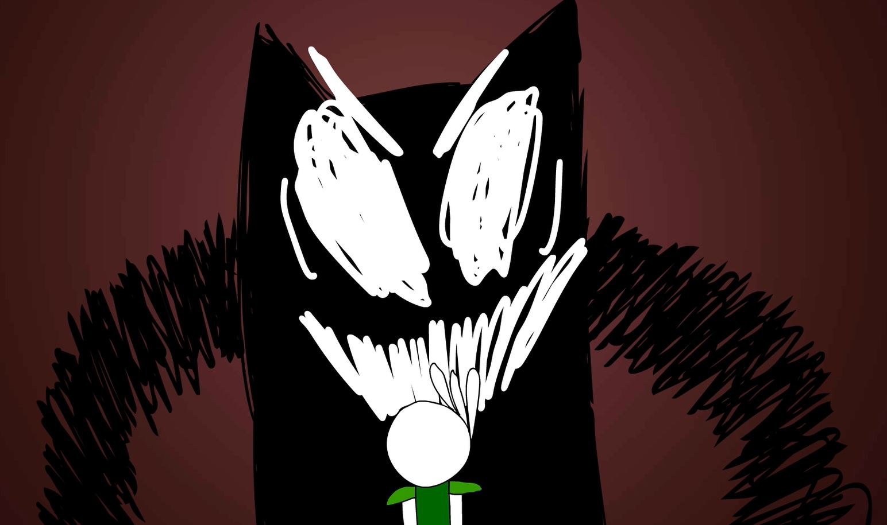

My name is Ben Hunter
And I have a lot of stories I want to tell
3D Modelling:

Some of my work from Year One of Game Design! 3D Modelling was the focus of the year and these are only some of the wireframes I created over the year. These specific models were created for the Videogame Environment Assessment in which we planned, produced, and created levels from scratch!
These are shots of my models after being UV Unwrapped, Exported to Unreal Engine 4, and layed out in a 360 degree skybox that took far too long to get working! Including actual light coming from the window!
2D Design:

I’ve dabbled in 2D Design, including this neat Pirates of Penzance poster I made for my high school. Minimalism is a style I find quite enjoyable, as I see beauty inthe simplicity of their designs. Something as complex as a sunset can be conveyed through two bold colours and a gradient.
Concept Art:


For many of my own personal projects I like to create concept art of a character and figure out how welltheir design works over a series of radically different poses/backgrounds. This specific character was sketched out for a Pokemon Webcomic.


2D Animation:
 Definitely the most ambitious project of my High School life, this 90 second animation was a lot of hardwork to make but I am immensely proud of the result.
Inspired from the cartoons I’ve consumed since childhood, such as Steven Universe, Gravity Falls (Etc.) this animated trailer for my Game Design VET showcases the culmination of my growth as an artist over the last few years.

The pride and passion I felt while creating this animation inspired me to pursue a career in the entertainment industry, to share my ideas with those who are willing to listen.